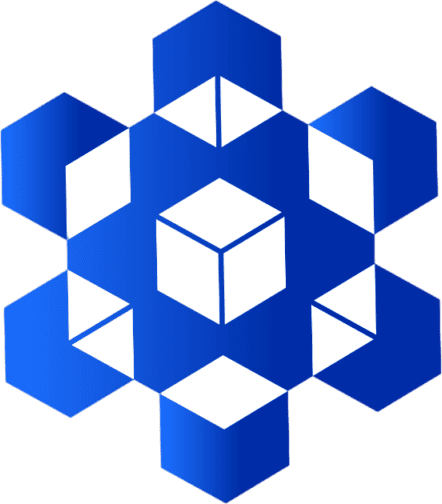

<!doctype html>
<html lang="en">
<head>
<meta charset="utf-8">
<meta name="description" content="ICE Lab, American University of Bahrain: equipment catalog, lab booking, 30 virtual benches with data analysis and calibration, and the Manufacturing Lab with its own machine simulations.">
<meta name="theme-color" content="#050A1A">
<link rel="icon" type="image/png" href="img/ice-mark.png">
<meta property="og:title" content="ICE Lab · American University of Bahrain">
<meta property="og:description" content="Book lab equipment, run the virtual benches and analyse your data.">
<meta property="og:image" content="img/ice-mark.png">
<meta name="viewport" content="width=device-width, initial-scale=1">
<title>Equipment catalog</title>
<script src="./support.js"></script>
</head>
<body>
<div id="dc-root"></div>
<script type="text/x-dc-tpl">
<helmet>
<link rel="stylesheet" href="https://fonts.googleapis.com/css2?family=IBM+Plex+Mono:wght@400;500&amp;family=IBM+Plex+Sans:wght@400;500;600;700&amp;family=Montserrat:wght@600;700;800&amp;display=swap">
<style>
body{margin:0;background:#050A1A}
a{color:#8FB3FF}a:hover{color:#C3D5FF}
</style>
</helmet>
<div style="font-family: 'IBM Plex Sans', system-ui, sans-serif; color: #E8ECF8; background: #050A1A; color-scheme: dark; min-height: 100vh">

<style>.ice-hd{position:sticky;top:0;z-index:20;background:rgba(5,10,26,.92);backdrop-filter:blur(10px);border-bottom:1px solid #16224A;font-family:"IBM Plex Sans",system-ui,sans-serif}.ice-hd .in{max-width:1400px;margin:0 auto;padding:10px 24px;display:flex;flex-wrap:wrap;align-items:center;gap:8px 24px;box-sizing:border-box}.ice-hd .brand{display:flex;align-items:center;gap:12px;text-decoration:none}.ice-hd .brand img{height:30px;width:auto}.ice-hd nav{display:flex;flex-wrap:wrap;gap:2px;flex:1 1 auto;justify-content:flex-end}.ice-hd nav a{color:#B7C2E2;text-decoration:none;padding:10px 12px;font-size:15px;white-space:nowrap}.ice-hd nav a:hover{color:#fff}.ice-hd nav a[aria-current]{color:#fff;font-weight:600;box-shadow:inset 0 -2px 0 #3A7BFF}@media (max-width:720px){.ice-hd .in{padding:8px 12px;gap:8px}.ice-hd nav{flex:1 1 100%;min-width:0;display:grid;grid-template-columns:repeat(3,minmax(0,1fr));gap:4px;margin:0}.ice-hd nav a{padding:9px 2px;font-size:13.5px;text-align:center;border-radius:6px;background:#0B1636;border:1px solid #16224A;overflow:hidden;text-overflow:ellipsis}.ice-hd nav a[aria-current]{box-shadow:none;background:#1F55E0;border-color:#1F55E0}}@media (max-width:360px){.ice-hd nav a{font-size:12.5px;padding:9px 0;letter-spacing:-.01em}}@media (pointer:coarse){button[role=tab]{position:relative}button[role=tab]::after{content:"";position:absolute;inset:-16px -5px}a[href="Main.dc.html"]:not(nav a),footer a{display:inline-block;padding:8px 0}}@media (max-width:720px){#q{width:100%;min-width:0;box-sizing:border-box}div:has(>#q){min-width:0;flex:1 1 100%!important}input:not([type=range]):not([type=checkbox]):not([type=radio]),select,textarea{font-size:16px!important}}</style><header class="ice-hd"><div class="in"><a class="brand" href="Home.dc.html" aria-label="ICE Lab home"></a><nav aria-label="Main"><a href="Home.dc.html">Home</a><a href="Main.dc.html" aria-current="page">Equipment</a><a href="SimHub.dc.html">Simulation</a><a href="Manufacturing.dc.html">Manufacturing</a><a href="Booking.dc.html">Book</a><a href="MyBookings.dc.html">My requests</a></nav></div></header>

<main style="max-width: 1280px; margin: 0 auto; padding: 40px 32px 64px; box-sizing: border-box; display: flex; flex-direction: column; gap: 24px">

<section style="display: flex; flex-direction: column; gap: 8px">
<p style="margin: 0; font-family: 'IBM Plex Mono', monospace; font-size: 13px; letter-spacing: 0.08em; text-transform: uppercase; color: #6E95FF">Mechanical Engineering Labs</p>
<h1 style="margin: 0; font-family: 'Montserrat', sans-serif; letter-spacing: -.01em; font-size: 40px; line-height: 1.15; font-weight: 700">Book lab equipment</h1>
<p style="margin: 0; font-size: 17px; line-height: 1.5; color: #8E9AC0; max-width: 680px">Choose a lab, pick a machine or apparatus and request a time slot. A lab technician reviews every booking before it is confirmed.</p>
</section>

<div role="tablist" aria-label="Lab" style="display: flex; flex-wrap: wrap; gap: 12px">
<sc-for list="{{labs}}" as="l" hint-placeholder-count="2">
<sc-if value="{{l.active}}" hint-placeholder-val="{{false}}">
<button type="button" role="tab" aria-selected="true" onClick="{{l.pick}}" style="flex: 1 1 280px; text-align: left; padding: 16px 18px; border: 2px solid #5B8CFF; border-radius: 10px; background: #0B1636; color: #E8ECF8; font: inherit; cursor: pointer; display: flex; flex-direction: column; gap: 4px">
<span style="font-size: 18px; font-weight: 600">{{l.name}}</span>
<span style="font-size: 14px; color: #8E9AC0">{{l.meta}}</span>
</button>
</sc-if>
<sc-if value="{{l.idle}}" hint-placeholder-val="{{true}}">
<button type="button" role="tab" aria-selected="false" onClick="{{l.pick}}" style="flex: 1 1 280px; text-align: left; padding: 16px 18px; border: 1px solid #1D2C5E; border-radius: 10px; background: #0E1A40; color: #E8ECF8; font: inherit; cursor: pointer; display: flex; flex-direction: column; gap: 4px">
<span style="font-size: 18px; font-weight: 500">{{l.name}}</span>
<span style="font-size: 14px; color: #8E9AC0">{{l.meta}}</span>
</button>
</sc-if>
</sc-for>
</div>

<form style="background: #0B1636; border: 1px solid #1D2C5E; border-radius: 10px; padding: 20px; display: flex; flex-wrap: wrap; gap: 16px; align-items: flex-end">
<div style="display: flex; flex-direction: column; gap: 6px; flex: 2 1 280px">
<label for="q" style="font-size: 14px; font-weight: 500">Search</label>
<input id="q" type="search" value="{{q}}" onChange="{{setQ}}" placeholder="Machine name, number or use" style="height: 44px; padding: 0 12px; border: 1px solid #2C4699; border-radius: 6px; font: inherit; font-size: 15px; color: #E8ECF8; background: #0B1636">
</div>
<div style="display: flex; flex-direction: column; gap: 6px; flex: 1 1 200px">
<label for="st" style="font-size: 14px; font-weight: 500">Status</label>
<select id="st" onChange="{{setOnlyOk}}" style="height: 44px; padding: 0 10px; border: 1px solid #2C4699; border-radius: 6px; font: inherit; font-size: 15px; color: #E8ECF8; background: #0B1636">
<option value="all">All statuses</option><option value="ok">Bookable only</option>
</select>
</div>

</form>

<div style="display: flex; flex-wrap: wrap; align-items: center; justify-content: space-between; gap: 12px">
<div role="group" aria-label="Filter by section" style="display: flex; flex-wrap: wrap; gap: 8px">
<sc-for list="{{chips}}" as="c" hint-placeholder-count="4">
<sc-if value="{{c.active}}" hint-placeholder-val="{{false}}">
<button type="button" aria-pressed="true" onClick="{{c.pick}}" style="height: 40px; padding: 0 16px; border-radius: 999px; border: 1px solid #3A6BFF; background: #1C3A9E; color: #FFFFFF; font: inherit; font-size: 14px; font-weight: 500; cursor: pointer">{{c.label}}</button>
</sc-if>
<sc-if value="{{c.idle}}" hint-placeholder-val="{{true}}">
<button type="button" aria-pressed="false" onClick="{{c.pick}}" style="height: 40px; padding: 0 16px; border-radius: 999px; border: 1px solid #2C4699; background: #0B1636; color: #E8ECF8; font: inherit; font-size: 14px; cursor: pointer">{{c.label}}</button>
</sc-if>
</sc-for>
</div>
<p style="margin: 0; font-size: 14px; color: #8E9AC0">{{countLabel}}</p>
</div>

<sc-for list="{{groups}}" as="g" hint-placeholder-count="2">
<section style="display: flex; flex-direction: column; gap: 14px">
<h2 style="margin: 8px 0 0; font-size: 22px; font-weight: 600; display: flex; align-items: baseline; gap: 10px">{{g.title}} <span style="font-size: 14px; font-weight: 400; color: #8E9AC0">{{g.count}}</span></h2>
<div style="display: grid; grid-template-columns: repeat(auto-fill, minmax(280px, 1fr)); gap: 16px">
<sc-for list="{{g.items}}" as="m" hint-placeholder-count="4">
<article style="background: #0B1636; border: 1px solid #1D2C5E; border-radius: 10px; padding: 16px; display: flex; flex-direction: column; gap: 12px">

<div style="display: flex; gap: 12px; align-items: flex-start">
<div style="display: flex; flex-direction: column; gap: 6px; min-width: 0; flex: 1 1 auto">
<div style="display: flex; flex-wrap: wrap; gap: 6px; align-items: center">
<span style="font-family: 'IBM Plex Mono', monospace; font-size: 12px; color: #8E9AC0">{{m.no}}</span>
<sc-if value="{{m.ok}}" hint-placeholder-val="{{true}}"><span style="font-size: 12px; font-weight: 600; padding: 3px 8px; border-radius: 999px; background: #0F2E22; color: #6EE7A8">Operational</span></sc-if>
<sc-if value="{{m.maint}}" hint-placeholder-val="{{false}}"><span style="font-size: 12px; font-weight: 600; padding: 3px 8px; border-radius: 999px; background: #3A2A0B; color: #FCD34D">Needs maintenance</span></sc-if>
<sc-if value="{{m.out}}" hint-placeholder-val="{{false}}"><span style="font-size: 12px; font-weight: 600; padding: 3px 8px; border-radius: 999px; background: #3B1515; color: #FCA5A5">Out of service</span></sc-if>
<sc-if value="{{m.untested}}" hint-placeholder-val="{{false}}"><span style="font-size: 12px; font-weight: 600; padding: 3px 8px; border-radius: 999px; background: #14214A; color: #B7C2E2">Not tested</span></sc-if>
</div>
<h3 style="margin: 0; font-size: 17px; line-height: 1.3; font-weight: 600">{{m.name}}</h3>
</div>
</div>
<p style="margin: 0; font-size: 14px; line-height: 1.5; color: #B7C2E2; display: -webkit-box; -webkit-line-clamp: 3; -webkit-box-orient: vertical; overflow: hidden">{{m.desc}}</p>
<p style="margin: 0; font-size: 13px; line-height: 1.45; color: #8E9AC0"><span style="font-weight: 600; color: #B7C2E2">{{m.extraLabel}}</span> {{m.extra}}</p>
<div style="display: flex; flex-direction: column; gap: 6px"><span style="font-size: 12px; font-weight: 600; letter-spacing: .04em; color: #FCD34D">Required PPE</span><ul style="margin: 0; padding: 0; list-style: none; display: flex; flex-wrap: wrap; gap: 6px"><sc-for list="{{m.ppe}}" as="p" hint-placeholder-count="3"><li title="{{p.t}} {{p.s}}" style="display: inline-flex; align-items: center; gap: 6px; padding: 4px 9px; border-radius: 999px; border: 1px solid #3A3213; background: rgba(252,211,77,.07); font-size: 12.5px; color: #E8ECF8"><span aria-hidden="true" style="font-size: 15px; line-height: 1">{{p.e}}</span><span>{{p.t}}</span><span style="font-family: 'IBM Plex Mono', monospace; font-size: 12px; color: #A7B1BF">{{p.s}}</span></li></sc-for></ul></div>
<div style="display: flex; gap: 10px; margin-top: auto">
<sc-if value="{{m.sim}}" hint-placeholder-val="{{true}}"><a href="{{m.sim}}" style="flex: 1 1 auto; display: flex; align-items: center; justify-content: center; height: 44px; border-radius: 6px; border: 1px solid #2C4699; background: #0E1A40; color: #E8ECF8; text-decoration: none; font-size: 15px; font-weight: 600">Simulation</a></sc-if>
<sc-if value="{{m.nosim}}" hint-placeholder-val="{{false}}"><a href="{{m.book}}" style="flex: 1 1 auto; display: flex; align-items: center; justify-content: center; height: 44px; border-radius: 6px; border: 1px solid #2C4699; color: #E8ECF8; text-decoration: none; font-size: 15px; font-weight: 500">Details</a></sc-if>
<sc-if value="{{m.ok}}" hint-placeholder-val="{{true}}">
<a href="{{m.book}}" style="flex: 1 1 auto; display: flex; align-items: center; justify-content: center; height: 44px; border-radius: 6px; background: linear-gradient(135deg, #2A6BFF, #0B33C9); color: #FFFFFF; text-decoration: none; font-size: 15px; font-weight: 600">Book</a>
</sc-if>
<sc-if value="{{m.blocked}}" hint-placeholder-val="{{false}}">
<button type="button" disabled="" style="flex: 1 1 auto; height: 44px; border: 0; border-radius: 6px; background: #101B3D; color: #8E9AC0; font: inherit; font-size: 15px">Not bookable</button>
</sc-if>
</div>
</article>
</sc-for>
</div>
</section>
</sc-for>

<sc-if value="{{empty}}" hint-placeholder-val="{{false}}">
<p style="margin: 0; padding: 40px; text-align: center; color: #8E9AC0; background: #0B1636; border: 1px solid #1D2C5E; border-radius: 10px">No equipment matches your search.</p>
</sc-if>

</main>
</div>
</script>
<script type="text/x-dc" data-dc-script data-props='{"$preview":{"width":1440,"height":2100}}'>
class Component extends DCLogic {
  constructor(props) {
    super(props);
    this.state = { lab: 'mfg', sec: 'All', q: '', onlyOk: false };
  }
  renderVals() {
    const S = 'op';
    const mfg = [
      ['M-01', 'UNIMAT ML Technics', 'Manual machines', 6, 'Modular desktop machine kit that can be set up as a lathe, mill, drill or saw for basic metal and wood work.', 'Precision collets, drill chuck, HSS turning set, steady rest, countershaft, power upgrade'],
      ['M-02', 'Pearl / center drilling machine (Metal Line)', 'Manual machines', 1, 'Bench drilling machine for accurate drilling and center drilling of small parts.', 'Drill chuck, twist drills 1–4 mm'],
      ['M-03', 'Horizontal milling machine (Metal Line)', 'Manual machines', 2, 'Manual horizontal mill for slots, steps and gear cutting on small workpieces.', 'Milling tool set, gear milling head, dividing attachment, milling table'],
      ['M-04', 'Vertical mill ML with vice', 'Manual machines', 2, 'Manual vertical mill with machine vice for facing, pockets, slots and drilling.', 'End mill set, fly cutter, precision collets, milling table'],
      ['M-05', '6-axis mill ML', 'Manual machines', 1, 'Manual mill with extra rotary and tilt axes for angled and multi-face machining.', 'End mill set, milling tool set, dividing attachment'],
      ['M-06', 'Metal lathe with power motor', 'Manual machines', 2, 'Motorised manual lathe for turning, facing, drilling and threading round parts.', 'HSS turning set, drill chuck, steady rest'],
      ['M-07', 'UNIMAT CNC 3-axis mill (extended, SC spindle)', 'CNC machines', 2, 'Computer-controlled 3-axis mill for machining parts from CAD/CAM toolpaths.', 'End mill set, milling tool set, milling table, E-stop module'],
      ['M-08', 'UNIMAT CNC lathe', 'CNC machines', 2, 'Computer-controlled lathe for turning profiles and threads from G-code.', 'HSS turning set, precision collets, E-stop module'],
      ['M-09', 'UNIMAT CNC 4-axis turn-mill', 'CNC machines', 2, 'Combined turning and milling package with a 4th rotary axis for more complex parts.', 'End mill set, HSS turning set, E-stop module'],
      ['M-10', 'UNI-LASER 3-axis laser (enclosed)', 'CNC machines', 1, 'Enclosed desktop laser for engraving and cutting thin non-metal sheet.', 'Honeycomb panel 180 × 100 mm, air pump, relay box'],
      ['M-11', 'UNIMAT CNC hot wire cutter 3D', 'CNC machines', 1, 'CNC hot-wire cutter for shaping foam blocks into 2D and 3D forms.', 'Relay box']
    ].map(([no, name, sec, units, desc, extra]) => ({ no, name, sec, desc, extra, extraLabel: units + (units === 1 ? ' unit · Tooling:' : ' units · Tooling:'), status: S, img: 'img/eq/' + no + '.jpg', book: 'Booking.dc.html#eq=' + no }));
    const ice = [
      [1, 'METCO Bainpol Auto — Automated Polishing Machine', 'Metallurgical', 'Automated grinding and polishing of metallographic specimens before microscopic examination.', 'Polishing platens, specimen holders, polishing cloths, abrasive media, water/coolant supply, control panel', 'op'],
      [2, 'METCO Bainmount Twin H Auto — Specimen Mounting Press', 'Metallurgical', 'Hot compression mounting system used to encapsulate small specimens in resin for metallographic preparation.', 'Twin mould cylinders, pistons, mounting resin, mould release, control panel, cooling connections', 'op'],
      [3, 'Vickers / Microhardness Testing System', 'Metallurgical', 'Measures hardness by controlled indentation and optical measurement of the impression.', 'Indenter, anvils/test stage, calibration blocks, microscope/objectives, specimen fixtures, digital controller', 'op'],
      [4, 'METCO Metallographic Abrasive Cutting Machine', 'Metallurgical', 'Cuts metallic and engineering specimens to size while limiting heat and deformation.', 'Cutting wheel, vice/clamps, coolant tank/pump, machine guard, dressing tool, sample supports', 'op'],
      [5, 'Laboratory Muffle Furnace', 'Metallurgical', 'High-temperature furnace for heat treatment, annealing, ashing and controlled thermal processing.', 'Crucibles/trays, tongs, temperature controller, thermocouple, heat-resistant gloves, furnace shelf', 'maint'],
      [6, 'Haver EML Digital Plus Sieve Shaker', 'Material Testing', 'Mechanical sieve analysis for particle-size distribution of powders, aggregates and granular materials.', 'Sieve stack, lid, receiver pan, clamping assembly, spare sieves, timer/control unit', 'op'],
      [7, 'Direct Shear Testing Machine', 'Material Testing', 'Determines shear strength of soil or granular material under controlled normal and horizontal loads.', 'Shear box, specimen mould/cutter, loading system, load cell/proving ring, displacement indicator, weights', 'op'],
      [8, 'MTS Universal Testing Machine', 'Material Testing', 'Tensile, compression and related mechanical tests for strength, stiffness and deformation properties.', 'Tensile grips, compression platens, load cell, extensometer, fixtures, testing software', 'op'],
      [9, 'Pendulum Impact Testing Machine (Charpy / Izod)', 'Material Testing', 'Measures energy absorbed during impact to evaluate toughness and notch sensitivity.', 'Pendulum hammer, striker, Charpy/Izod supports, specimen tongs, safety enclosure, calibration accessories', 'op'],
      [10, 'Torsion Test Apparatus', 'Solid Mechanics', 'Torque, angle of twist, torsional stiffness and material behaviour of shafts under twisting load.', 'Specimen shafts, chucks, torque sensor, angle encoder, calibration tools, data interface', 'op'],
      [11, 'Rotating Fatigue Testing Machine', 'Solid Mechanics', 'Repeated cyclic bending to study fatigue life and stress-life behaviour.', 'Fatigue specimens, loading weights, rotation counter, speed sensor, safety cover, alignment tools', 'op'],
      [12, 'Forces in a Truss Apparatus', 'Solid Mechanics', 'Tensile and compressive forces in truss members under different loading arrangements.', 'Truss members, load hanger/weights, force sensors, connection pins, digital display', 'op'],
      [13, 'Bending Stress in a Beam Apparatus', 'Solid Mechanics', 'Bending stress distribution and strain response of a beam under transverse loading.', 'Beam specimen, supports, load hanger/weights, strain gauges, data acquisition unit', 'op'],
      [14, 'Buckling Test Apparatus', 'Solid Mechanics', 'Euler buckling, critical load, effective length and end-condition effects on slender columns.', 'Test struts, end-condition fixtures, loading mechanism, displacement gauge, load sensor, specimen set', 'op'],
      [15, 'Beam Apparatus', 'Solid Mechanics', 'Beam deflection, support reactions, bending behaviour and effects of load position.', 'Beam specimens, supports, load hangers/weights, dial/digital gauges, spirit level, clamps', 'op'],
      [16, 'Pin-Jointed Frameworks Apparatus', 'Solid Mechanics', 'Force distribution and deformation in pin-jointed structures and frame members.', 'Frame members, pin joints, load hangers/weights, displacement indicator, force sensors, hardware', 'op'],
      [17, 'TecQuipment Turbojet Engine Test Rig', 'Thermodynamics', 'Gas-turbine and turbojet operation with thrust, speed, pressure and temperature measurement.', 'Engine/control panel, fuel system, pressure and temperature sensors, thrust measurement, data acquisition', 'out'],
      [18, 'Thermal Power Plant with Steam Turbine', 'Thermodynamics', 'Small-scale steam power cycle with measurement of thermal and mechanical performance.', 'Boiler, turbine, condenser/cooling system, pumps, gauges, control panel, safety accessories', 'op'],
      [19, 'Refrigeration / Heat Pump Training System', 'Thermodynamics', 'Vapour-compression refrigeration and heat-pump principles with measurable temperatures and pressures.', 'Compressor, condenser, evaporator, expansion device, pressure gauges, temperature sensors', 'op'],
      [20, 'Heat Exchanger Service Module', 'Thermodynamics', 'Hot and cold fluid services for evaluating heat exchanger performance and effectiveness.', 'Test section, hot/cold water hoses, pumps, flow controls, temperature sensors, fittings', 'op'],
      [21, 'Heat Transfer Experiment Base Unit', 'Thermodynamics', 'Base unit for conduction, convection, radiation and related thermal experiments.', 'Heater/control unit, thermocouples, experiment modules, water hoses, sensor leads', 'op'],
      [22, 'Matrix Wind Tunnel', 'Fluid Mechanics', 'Controlled airflow for aerodynamic testing of pressure, velocity, drag and lift.', 'Test-section models, pitot/static probes, pressure measurement, force balance, fan, computer interface', 'op'],
      [23, 'TecQuipment CE111 PLC Process Trainer', 'Fluid Mechanics', 'PLC-based control of tank level, flow, pumps and valves.', 'Process tanks, pump, valves, level/flow sensors, PLC trainer panel, computer interface', 'op'],
      [24, 'Wind Energy Module', 'Fluid Mechanics', 'Wind-energy conversion from air flow to electrical output and turbine/load performance.', 'Fan/blower, turbine rotor, wind-speed controller, electrical load module, meters/sensors', 'untested'],
      [25, 'TecQuipment CE117 Process Trainer', 'Fluid Mechanics', 'Fluid-process dynamics and control with vessel, circulation loop, heater, sensors and pump.', 'Process vessel, reservoir, heater tank, pump, sensors, valves, hoses, training panel', 'op'],
      [26, 'Series and Parallel Pumps Apparatus', 'Fluid Mechanics', 'Centrifugal pump characteristics individually, in series and in parallel.', 'Two pumps, reservoir, pressure gauges, flowmeter, valves, pipework', 'op'],
      [27, 'TecQuipment H16 — Losses in Pipe Systems', 'Fluid Mechanics', 'Major and minor head losses through pipes, valves, bends, fittings and diameter changes.', 'Pipe test sections, pressure taps, multi-tube manometers, valves/fittings, water supply', 'op'],
      [28, 'Hydrostatics and Properties of Fluids Apparatus', 'Fluid Mechanics', 'Hydrostatic pressure, density, buoyancy and fundamental properties of liquids.', 'Measuring vessels, pressure gauges, balance/weights, glassware, measuring scales', 'op'],
      [29, 'Centre of Pressure Apparatus', 'Fluid Mechanics', 'Hydrostatic force and centre of pressure on a submerged plane surface.', 'Quadrant, water tank, balance arm, weights, level indicator, measuring scale', 'op'],
      [30, 'Flow Measurement / Multi-Tube Manometer Apparatus', 'Fluid Mechanics', 'Pressure differences and flow behaviour across fluid-system elements using a manometer bank.', 'Manometer bank, pressure taps, pipework, valves, flow-control fittings, water supply', 'op'],
      [31, 'Rotor Dynamics / Balancing Training Rig', 'Vibration', 'Rotating-shaft behaviour, imbalance, critical speed and vibration response.', 'Shaft and discs, bearings, safety guard, variable-speed drive, vibration sensors, balancing weights', 'op'],
      [32, 'Free and Forced Vibration Apparatus', 'Vibration', 'Natural frequency, damping, resonance and forced vibration response.', 'Springs, masses, exciter, damping elements, displacement/acceleration sensor, control unit', 'op']
    ].map(([n, name, sec, desc, extra, status]) => ({ no: 'No. ' + (n < 10 ? '0' : '') + n, name, sec, desc, extra, extraLabel: 'Accessories:', status, img: 'img/eq/ice-' + (n < 10 ? '0' : '') + n + '.jpg', book: 'Booking.dc.html#eq=' + (n < 10 ? '0' : '') + n })).concat([["ES1-1", "ES1 Work Panel (panel 1 of 3)", "Slotted aluminium work panel on a stand that every Engineering Science kit mounts on.", "Work panel, kit parts and storage tray", "op", ""], ["ES1-2", "ES1 Work Panel (panel 2 of 3)", "Slotted aluminium work panel on a stand that every Engineering Science kit mounts on.", "Work panel, kit parts and storage tray", "op", ""], ["ES1-3", "ES1 Work Panel (panel 3 of 3)", "Slotted aluminium work panel on a stand that every Engineering Science kit mounts on.", "Work panel, kit parts and storage tray", "op", ""], ["ES2", "ES2 Forces Kit", "Resolve and combine forces: parallelogram and triangle of forces, equilibrium of concurrent forces, jib crane.", "Work panel, kit parts and storage tray", "op", ""], ["ES3", "ES3 Moments Kit", "Principle of moments, levers, beam reactions and centre of gravity with a balanced beam and hangers.", "Work panel, kit parts and storage tray", "op", ""], ["ES4", "ES4 Deflection of Beams and Cantilevers Kit", "Measure deflection of simply supported beams and cantilevers under point loads with a dial gauge.", "Work panel, kit parts and storage tray", "op", "beams"], ["ES5", "ES5 Torsion of Circular Sections Kit", "Twist rods of different materials and diameters and relate torque to angle of twist and shear modulus.", "Work panel, kit parts and storage tray", "op", "torsion"], ["ES6", "ES6 Tensile Tester Kit", "Small hand-operated tensile tester for load against extension of metal and polymer specimens.", "Work panel, kit parts and storage tray", "op", "tensile"], ["ES7", "ES7 Simple Harmonic Motion Kit", "Simple and compound pendulums and spring-mass systems: period, frequency and simple harmonic motion.", "Work panel, kit parts and storage tray", "op", ""], ["ES8", "ES8 Friction and Inclined Plane Kit", "Static and dynamic friction on flat and inclined planes, angle of repose and effort to move a load.", "Work panel, kit parts and storage tray", "op", ""], ["ES9", "ES9 Potential and Kinetic Energy Kit", "Energy conversion with a flywheel and falling mass: potential, kinetic and rotational energy.", "Work panel, kit parts and storage tray", "op", ""], ["ES10", "ES10 Pulley Kit", "Fixed, movable and compound pulley systems: mechanical advantage, velocity ratio and efficiency.", "Work panel, kit parts and storage tray", "op", ""], ["ES11", "ES11 Drive Systems Kit", "Belt, chain and gear drives: velocity ratio, slip and efficiency of power transmission.", "Work panel, kit parts and storage tray", "op", ""], ["ES12", "ES12 Cam, Crank and Toggle Kit", "Cam profiles and followers, slider-crank and toggle mechanisms: displacement and mechanical advantage.", "Work panel, kit parts and storage tray", "op", ""], ["ES13", "ES13 Gear Trains Kit", "Simple, compound and idler gear trains: gear ratio, direction and efficiency.", "Work panel, kit parts and storage tray", "op", ""], ["ES14", "ES14 Simple Mechanisms Kit", "Screw jack, wheel and axle and other simple machines: effort, load and efficiency.", "Work panel, kit parts and storage tray", "op", ""], ["ES15", "ES15 Bar Linkages Kit", "Four-bar and other linkages: input and output angles, quick return and parallel motion.", "Work panel, kit parts and storage tray", "op", ""], ["ES16", "ES16 Centrifugal Force Kit", "Centrifugal force on a rotating mass against speed and radius.", "Work panel, kit parts and storage tray", "op", ""], ["ES17", "ES17 Rotational Friction Kit", "Friction in bearings, belts and brakes on a rotating drum; band brake and belt friction.", "Work panel, kit parts and storage tray", "op", ""], ["ES18", "ES18 Additional Mechanisms Kit", "More mechanisms to build on the work panel: ratchets, Geneva wheel, universal joint and others.", "Work panel, kit parts and storage tray", "op", ""], ["ES19", "ES19 Spring Tester Kit", "Load against extension and compression of springs: Hooke's law and spring rate, springs in series and parallel.", "Work panel, kit parts and storage tray", "op", "eskit"]].map(([c, name, desc, extra, status]) => ({ no: c, name, sec: 'Engineering Science', desc, extra, extraLabel: 'Borrow or use in the lab · Includes:', status, img: 'img/eq/' + c + '.jpg', book: 'Booking.dc.html#eq=' + c })));

    const SIMNO = {"No. 01": "metallography", "No. 03": "vickers", "No. 08": "tensile", "No. 09": "charpy", "No. 10": "torsion", "No. 11": "fatigue", "No. 12": "frameworks", "No. 13": "beams", "No. 14": "buckling", "No. 15": "beams", "No. 16": "frameworks", "No. 17": "gt100", "No. 18": "td1060v", "No. 19": "ec1501", "No. 20": "td360", "No. 21": "td1002", "No. 22": "windtunnel", "No. 23": "plc", "No. 24": "wind", "No. 25": "ce117", "No. 26": "h52", "No. 27": "h16", "No. 28": "h314", "No. 29": "h11", "No. 31": "whirling", "No. 32": "tm1016v", "M-01": "mlathe", "M-02": "mmill", "M-03": "mmill", "M-04": "mmill", "M-05": "mmill", "M-06": "mlathe", "M-07": "cncmill", "M-08": "cnclathe", "M-09": "cncmill", "M-10": "laser", "M-11": "hotwire", "ES4": "beams", "ES5": "torsion", "ES6": "tensile", "ES19": "eskit"};
    const PPE = {"No. 01": [{"e": "🥽", "t": "Safety glasses", "s": "ANSI Z87.1 / EN 166"}, {"e": "🧤", "t": "Nitrile gloves", "s": "EN ISO 374"}, {"e": "🥼", "t": "Lab coat", "s": ""}, {"e": "👟", "t": "Closed-toe shoes", "s": ""}], "No. 02": [{"e": "🥽", "t": "Safety glasses", "s": "ANSI Z87.1 / EN 166"}, {"e": "🔥🧤", "t": "Heat-resistant gloves", "s": "EN 407"}, {"e": "🥼", "t": "Lab coat", "s": ""}, {"e": "👟", "t": "Closed-toe shoes", "s": ""}], "No. 03": [{"e": "🥽", "t": "Safety glasses", "s": "ANSI Z87.1 / EN 166"}, {"e": "🥼", "t": "Lab coat", "s": ""}, {"e": "👟", "t": "Closed-toe shoes", "s": ""}], "No. 04": [{"e": "🥽", "t": "Safety glasses", "s": "ANSI Z87.1 / EN 166"}, {"e": "🛡️", "t": "Face shield", "s": "ANSI Z87.1 / EN 166"}, {"e": "🎧", "t": "Hearing protection", "s": "EN 352"}, {"e": "✂️🧤", "t": "Cut-resistant gloves", "s": "EN 388"}, {"e": "🥼", "t": "Lab coat", "s": ""}, {"e": "👟", "t": "Closed-toe shoes", "s": ""}], "No. 05": [{"e": "🛡️", "t": "Face shield", "s": "ANSI Z87.1 / EN 166"}, {"e": "🔥🧤", "t": "Heat-resistant gloves", "s": "EN 407"}, {"e": "🥼", "t": "Lab coat", "s": ""}, {"e": "👟", "t": "Closed-toe shoes", "s": ""}], "No. 06": [{"e": "🥽", "t": "Safety glasses", "s": "ANSI Z87.1 / EN 166"}, {"e": "😷", "t": "Dust mask FFP2 / N95", "s": "EN 149"}, {"e": "🎧", "t": "Hearing protection", "s": "EN 352"}, {"e": "👟", "t": "Closed-toe shoes", "s": ""}], "No. 07": [{"e": "🥽", "t": "Safety glasses", "s": "ANSI Z87.1 / EN 166"}, {"e": "🧤", "t": "Nitrile gloves", "s": "EN ISO 374"}, {"e": "🥼", "t": "Lab coat", "s": ""}, {"e": "👟", "t": "Closed-toe shoes", "s": ""}], "No. 08": [{"e": "🥽", "t": "Safety glasses", "s": "ANSI Z87.1 / EN 166"}, {"e": "🥼", "t": "Lab coat", "s": ""}, {"e": "👟", "t": "Closed-toe shoes", "s": ""}], "No. 09": [{"e": "🥽", "t": "Safety glasses", "s": "ANSI Z87.1 / EN 166"}, {"e": "🥼", "t": "Lab coat", "s": ""}, {"e": "👟", "t": "Closed-toe shoes", "s": ""}], "No. 10": [{"e": "🥽", "t": "Safety glasses", "s": "ANSI Z87.1 / EN 166"}, {"e": "👟", "t": "Closed-toe shoes", "s": ""}], "No. 11": [{"e": "🥽", "t": "Safety glasses", "s": "ANSI Z87.1 / EN 166"}, {"e": "💇", "t": "Hair tied back, no loose clothing", "s": ""}, {"e": "👟", "t": "Closed-toe shoes", "s": ""}], "No. 12": [{"e": "🥽", "t": "Safety glasses", "s": "ANSI Z87.1 / EN 166"}, {"e": "👟", "t": "Closed-toe shoes", "s": ""}], "No. 13": [{"e": "🥽", "t": "Safety glasses", "s": "ANSI Z87.1 / EN 166"}, {"e": "👟", "t": "Closed-toe shoes", "s": ""}], "No. 14": [{"e": "🥽", "t": "Safety glasses", "s": "ANSI Z87.1 / EN 166"}, {"e": "👟", "t": "Closed-toe shoes", "s": ""}], "No. 15": [{"e": "🥽", "t": "Safety glasses", "s": "ANSI Z87.1 / EN 166"}, {"e": "👟", "t": "Closed-toe shoes", "s": ""}], "No. 16": [{"e": "🥽", "t": "Safety glasses", "s": "ANSI Z87.1 / EN 166"}, {"e": "👟", "t": "Closed-toe shoes", "s": ""}], "No. 17": [{"e": "🥽", "t": "Safety glasses", "s": "ANSI Z87.1 / EN 166"}, {"e": "🎧", "t": "Hearing protection", "s": "EN 352"}, {"e": "🔥🧤", "t": "Heat-resistant gloves", "s": "EN 407"}, {"e": "💇", "t": "Hair tied back, no loose clothing", "s": ""}, {"e": "👟", "t": "Closed-toe shoes", "s": ""}], "No. 18": [{"e": "🥽", "t": "Safety glasses", "s": "ANSI Z87.1 / EN 166"}, {"e": "🔥🧤", "t": "Heat-resistant gloves", "s": "EN 407"}, {"e": "👟", "t": "Closed-toe shoes", "s": ""}], "No. 19": [{"e": "🥽", "t": "Safety glasses", "s": "ANSI Z87.1 / EN 166"}, {"e": "🧤", "t": "Nitrile gloves", "s": "EN ISO 374"}, {"e": "👟", "t": "Closed-toe shoes", "s": ""}], "No. 20": [{"e": "🥽", "t": "Safety glasses", "s": "ANSI Z87.1 / EN 166"}, {"e": "🔥🧤", "t": "Heat-resistant gloves", "s": "EN 407"}, {"e": "👟", "t": "Closed-toe shoes", "s": ""}], "No. 21": [{"e": "🥽", "t": "Safety glasses", "s": "ANSI Z87.1 / EN 166"}, {"e": "🔥🧤", "t": "Heat-resistant gloves", "s": "EN 407"}, {"e": "👟", "t": "Closed-toe shoes", "s": ""}], "No. 22": [{"e": "🥽", "t": "Safety glasses", "s": "ANSI Z87.1 / EN 166"}, {"e": "🎧", "t": "Hearing protection", "s": "EN 352"}, {"e": "💇", "t": "Hair tied back, no loose clothing", "s": ""}, {"e": "👟", "t": "Closed-toe shoes", "s": ""}], "No. 23": [{"e": "🥽", "t": "Safety glasses", "s": "ANSI Z87.1 / EN 166"}, {"e": "👟", "t": "Closed-toe shoes", "s": ""}], "No. 24": [{"e": "🥽", "t": "Safety glasses", "s": "ANSI Z87.1 / EN 166"}, {"e": "🎧", "t": "Hearing protection", "s": "EN 352"}, {"e": "💇", "t": "Hair tied back, no loose clothing", "s": ""}, {"e": "👟", "t": "Closed-toe shoes", "s": ""}], "No. 25": [{"e": "🥽", "t": "Safety glasses", "s": "ANSI Z87.1 / EN 166"}, {"e": "🔥🧤", "t": "Heat-resistant gloves", "s": "EN 407"}, {"e": "👟", "t": "Closed-toe shoes", "s": ""}], "No. 26": [{"e": "🥽", "t": "Safety glasses", "s": "ANSI Z87.1 / EN 166"}, {"e": "👟", "t": "Closed-toe shoes", "s": ""}], "No. 27": [{"e": "🥽", "t": "Safety glasses", "s": "ANSI Z87.1 / EN 166"}, {"e": "👟", "t": "Closed-toe shoes", "s": ""}], "No. 28": [{"e": "🥽", "t": "Safety glasses", "s": "ANSI Z87.1 / EN 166"}, {"e": "🧤", "t": "Nitrile gloves", "s": "EN ISO 374"}, {"e": "🥼", "t": "Lab coat", "s": ""}, {"e": "👟", "t": "Closed-toe shoes", "s": ""}], "No. 29": [{"e": "🥽", "t": "Safety glasses", "s": "ANSI Z87.1 / EN 166"}, {"e": "👟", "t": "Closed-toe shoes", "s": ""}], "No. 30": [{"e": "🥽", "t": "Safety glasses", "s": "ANSI Z87.1 / EN 166"}, {"e": "👟", "t": "Closed-toe shoes", "s": ""}], "No. 31": [{"e": "🥽", "t": "Safety glasses", "s": "ANSI Z87.1 / EN 166"}, {"e": "💇", "t": "Hair tied back, no loose clothing", "s": ""}, {"e": "👟", "t": "Closed-toe shoes", "s": ""}], "No. 32": [{"e": "🥽", "t": "Safety glasses", "s": "ANSI Z87.1 / EN 166"}, {"e": "👟", "t": "Closed-toe shoes", "s": ""}], "M-01": [{"e": "🥽", "t": "Safety glasses", "s": "ANSI Z87.1 / EN 166"}, {"e": "🚫🧤", "t": "No gloves at the spindle", "s": ""}, {"e": "💇", "t": "Hair tied back, no loose clothing", "s": ""}, {"e": "🥾", "t": "Safety shoes", "s": "EN ISO 20345 / ASTM F2413"}], "M-02": [{"e": "🥽", "t": "Safety glasses", "s": "ANSI Z87.1 / EN 166"}, {"e": "🚫🧤", "t": "No gloves at the spindle", "s": ""}, {"e": "💇", "t": "Hair tied back, no loose clothing", "s": ""}, {"e": "🥾", "t": "Safety shoes", "s": "EN ISO 20345 / ASTM F2413"}], "M-03": [{"e": "🥽", "t": "Safety glasses", "s": "ANSI Z87.1 / EN 166"}, {"e": "🚫🧤", "t": "No gloves at the spindle", "s": ""}, {"e": "💇", "t": "Hair tied back, no loose clothing", "s": ""}, {"e": "🥾", "t": "Safety shoes", "s": "EN ISO 20345 / ASTM F2413"}], "M-04": [{"e": "🥽", "t": "Safety glasses", "s": "ANSI Z87.1 / EN 166"}, {"e": "🚫🧤", "t": "No gloves at the spindle", "s": ""}, {"e": "💇", "t": "Hair tied back, no loose clothing", "s": ""}, {"e": "🥾", "t": "Safety shoes", "s": "EN ISO 20345 / ASTM F2413"}], "M-05": [{"e": "🥽", "t": "Safety glasses", "s": "ANSI Z87.1 / EN 166"}, {"e": "🚫🧤", "t": "No gloves at the spindle", "s": ""}, {"e": "💇", "t": "Hair tied back, no loose clothing", "s": ""}, {"e": "🥾", "t": "Safety shoes", "s": "EN ISO 20345 / ASTM F2413"}], "M-06": [{"e": "🥽", "t": "Safety glasses", "s": "ANSI Z87.1 / EN 166"}, {"e": "🚫🧤", "t": "No gloves at the spindle", "s": ""}, {"e": "💇", "t": "Hair tied back, no loose clothing", "s": ""}, {"e": "🥾", "t": "Safety shoes", "s": "EN ISO 20345 / ASTM F2413"}], "M-07": [{"e": "🥽", "t": "Safety glasses", "s": "ANSI Z87.1 / EN 166"}, {"e": "🚫🧤", "t": "No gloves at the spindle", "s": ""}, {"e": "💇", "t": "Hair tied back, no loose clothing", "s": ""}, {"e": "🥾", "t": "Safety shoes", "s": "EN ISO 20345 / ASTM F2413"}], "M-08": [{"e": "🥽", "t": "Safety glasses", "s": "ANSI Z87.1 / EN 166"}, {"e": "🚫🧤", "t": "No gloves at the spindle", "s": ""}, {"e": "💇", "t": "Hair tied back, no loose clothing", "s": ""}, {"e": "🥾", "t": "Safety shoes", "s": "EN ISO 20345 / ASTM F2413"}], "M-09": [{"e": "🥽", "t": "Safety glasses", "s": "ANSI Z87.1 / EN 166"}, {"e": "🚫🧤", "t": "No gloves at the spindle", "s": ""}, {"e": "💇", "t": "Hair tied back, no loose clothing", "s": ""}, {"e": "🥾", "t": "Safety shoes", "s": "EN ISO 20345 / ASTM F2413"}], "M-10": [{"e": "🔆🥽", "t": "Laser eyewear 450 nm", "s": "EN 207 / ANSI Z136.1"}, {"e": "🔒", "t": "Enclosure closed", "s": ""}, {"e": "🥾", "t": "Safety shoes", "s": "EN ISO 20345 / ASTM F2413"}], "M-11": [{"e": "🥽", "t": "Safety glasses", "s": "ANSI Z87.1 / EN 166"}, {"e": "🔥🧤", "t": "Heat-resistant gloves", "s": "EN 407"}, {"e": "💨", "t": "Fume extraction on", "s": ""}, {"e": "🥾", "t": "Safety shoes", "s": "EN ISO 20345 / ASTM F2413"}], "ES1-1": [{"e": "👟", "t": "Closed-toe shoes", "s": ""}], "ES1-2": [{"e": "👟", "t": "Closed-toe shoes", "s": ""}], "ES1-3": [{"e": "👟", "t": "Closed-toe shoes", "s": ""}], "ES2": [{"e": "👟", "t": "Closed-toe shoes", "s": ""}], "ES3": [{"e": "👟", "t": "Closed-toe shoes", "s": ""}], "ES4": [{"e": "👟", "t": "Closed-toe shoes", "s": ""}], "ES5": [{"e": "👟", "t": "Closed-toe shoes", "s": ""}], "ES6": [{"e": "👟", "t": "Closed-toe shoes", "s": ""}], "ES7": [{"e": "👟", "t": "Closed-toe shoes", "s": ""}], "ES8": [{"e": "👟", "t": "Closed-toe shoes", "s": ""}], "ES9": [{"e": "👟", "t": "Closed-toe shoes", "s": ""}], "ES10": [{"e": "👟", "t": "Closed-toe shoes", "s": ""}], "ES11": [{"e": "👟", "t": "Closed-toe shoes", "s": ""}], "ES12": [{"e": "👟", "t": "Closed-toe shoes", "s": ""}], "ES13": [{"e": "👟", "t": "Closed-toe shoes", "s": ""}], "ES14": [{"e": "👟", "t": "Closed-toe shoes", "s": ""}], "ES15": [{"e": "👟", "t": "Closed-toe shoes", "s": ""}], "ES16": [{"e": "👟", "t": "Closed-toe shoes", "s": ""}], "ES17": [{"e": "👟", "t": "Closed-toe shoes", "s": ""}], "ES18": [{"e": "👟", "t": "Closed-toe shoes", "s": ""}], "ES19": [{"e": "👟", "t": "Closed-toe shoes", "s": ""}]};
    const DEFPPE = [{e: '👟', t: 'Closed-toe shoes', s: ''}];
    const { lab, sec, q, onlyOk } = this.state;
    const all = lab === 'mfg' ? mfg : ice;
    const secs = lab === 'mfg' ? ['Manual machines', 'CNC machines'] : ['Metallurgical', 'Material Testing', 'Solid Mechanics', 'Thermodynamics', 'Fluid Mechanics', 'Vibration', 'Engineering Science'];
    const labs = [
      { key: 'mfg', name: 'Manufacturing Lab', meta: '11 machines · 21 units · manual & CNC (UNIMAT)' },
      { key: 'ice', name: 'ICE Lab', meta: '32 apparatus · 6 sections + 21 Engineering Science kits' }
    ].map((l) => ({ ...l, active: l.key === lab, idle: l.key !== lab, pick: () => this.setState({ lab: l.key, sec: 'All' }) }));
    const chips = ['All'].concat(secs).map((c) => ({ label: c === 'All' ? 'All sections' : c, active: c === sec, idle: c !== sec, pick: () => this.setState({ sec: c }) }));
    const ql = q.trim().toLowerCase();
    const shown = all.filter((m) => (sec === 'All' || m.sec === sec)
      && (!ql || (m.name + ' ' + m.no + ' ' + m.desc).toLowerCase().indexOf(ql) >= 0)
      && (!onlyOk || m.status === 'op'))
      .map((m) => ({ ...m, ppe: PPE[m.no] || DEFPPE, sim: SIMNO[m.no] ? 'bench.html#' + SIMNO[m.no] : '', nosim: !SIMNO[m.no], ok: m.status === 'op', maint: m.status === 'maint', out: m.status === 'out', untested: m.status === 'untested', blocked: m.status !== 'op' }));
    const groups = secs.map((s) => {
      const items = shown.filter((m) => m.sec === s);
      return { title: s, count: items.length + (items.length === 1 ? ' item' : ' items'), items };
    }).filter((g) => g.items.length > 0);
    return {
      labs, chips, groups, q,
      empty: shown.length === 0,
      countLabel: 'Showing ' + shown.length + ' of ' + all.length,
      setQ: (e) => this.setState({ q: e.target.value }),
      setOnlyOk: (e) => this.setState({ onlyOk: e.target.value === 'ok' })
    };
  }
}
</script>
</body>
</html>
